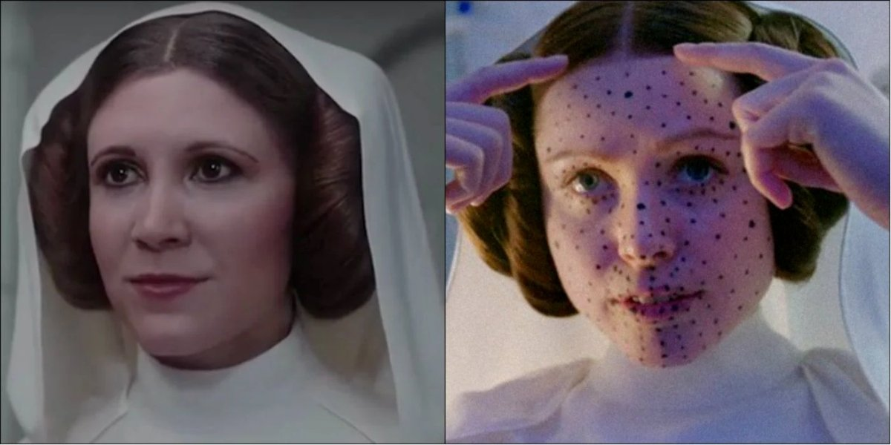

| Why? | |
|---|---|
| Actors who have passed away already were being digitized. | The purpose of this was to bring actors who have passed away “back from the dead”. Having certain actors acting in movies can bring in more viewers to watch the movie. | Benefits & Risks | For the better or for the worse? |
| Yes, producers and directors are being benefited since they are able to produce films and content with the actors they specifically wanted to have in their movies. Additionally, this can benefit viewers since it can bring them more joy to see their favorite actors “acting again” when they thought they wouldn’t be able to see them in more movies.
 |
There is a possibility that the actors who are being digitally produced are being harmed because the question is if it is morally correct to digitally produce them in movies without their consent. But the actors aren’t alive to give that consent. |
Long-dead actors continue to achieve a sort of immortality in their films. A new controversy over dead actors is coming to life based upon new uses of visual effects and computer-generated imagery (CGI). Instead of ++++simply using CGI to create stunning action sequences, gorgeous backdrops, and imaginary monsters, film makers have started to use its technological wonders to bring back actors from the grave. What ethical problems circle around the use of digital reincarnations in film making?
The use of CGI to change the look of actors is nothing new. ++++For instance, many films have used such CGI methods to digitally de-age actors with striking results (like those found in the Marvel films), or to create spectacular creatures without much physical reality (such as “Gollum” in The Lord of the Rings series). What happens when CGI places an actor into a film through the intervention of technology? A recent example of digital reincarnation in the film industry is found in 😊Fast and Furious 7, where Paul Walker had to be digitally recreated due to his untimely death in the middle of the film’s production. Walker’s brothers had to step in to give a physical form for the visual effect artists to finish off Walker’s character in the movie, and the results brought about mixed reviews as some viewers thought it was “odd” that they were seeing a deceased actor on screen that was recreated digitally. However, many argue that this was the best course of action to take in order to complete film production and honor Paul Walker’s work and character.
Other recent films have continued to bet on using CGI to help recreate characters on the silver screen. For instance, 2016’s Rogue One: A Star War Story used advanced CGI techniques that hint at the ethical problems that lie ahead for film-makers. Peter Cushing was first featured in 1977’s Star Wars: A New Hope as Grand Moff Tarkin. In the Star Wars timeline, the events that take place in Rogue One lead directly into A New Hope, so the story writers behind the recent Rogue One felt inclined to include Grand Moff Tarkin as a key character in the events leading up to the next film. There was one problem, however: Peter Cushing died in 1994. The film producers were faced with an interesting problem and ultimately decided to use CGI to digitally resurrect Cushing from the grave to reprise his role as the Imperial officer. The result of this addition of Grand Moff Tarkin in the final cut of the film sent shockwaves across the Star Wars fandom, with some presenting arguments in defense of adding Cushing’s character into the film by claiming that “actors don’t own characters” (Tylt.com) and that the fact that the character looked the same over the course of the fictional timeline enhanced the aesthetic effects of the movies. Others, like Catherine Shoard, were more critical. She condemned the film’s risky choice saying, “though Cushing’s estate approved his use in Rogue One, I’m not convinced that if I had built up a formidable acting career, I’d then want to turn in a performance I had bupkis to do with.” Rich Haridy of New Atlas also expressed some criticism over the use of Peter Cushing in the recent Star Wars film by writing, “there is something inherently unnerving about watching such a perfect simulacrum of someone you know cannot exist.”
This use of CGI to bring back dead actors and place them into film raises troubling questions about consent. Assuming that actors should only appear in films that they choose to, how can we be assured that such post-mortem uses are consistent with the actor’s wishes? Is gaining permission from the relatives of the deceased enough to use an actor’s image or likeness? Additionally, the possibility is increased that CGI can be used to bring unwilling figures into a film. Many films have employed look-alikes to bring presidents or historical figures into a narrative; the possibility of using CGI to bring in exact versions of actors and celebrities into films does not seem that different from this tactic. This filmic use of CGI actors also extends our worries over “deepfakes” (AI-created fake videos) and falsified videos into the murkier realm of fictional products and narratives. While we like continuity in actors as a way to preserve our illusion of reality in films, what ethical pitfalls await us as we CGI the undead—or the unwilling—into our films or artworks?